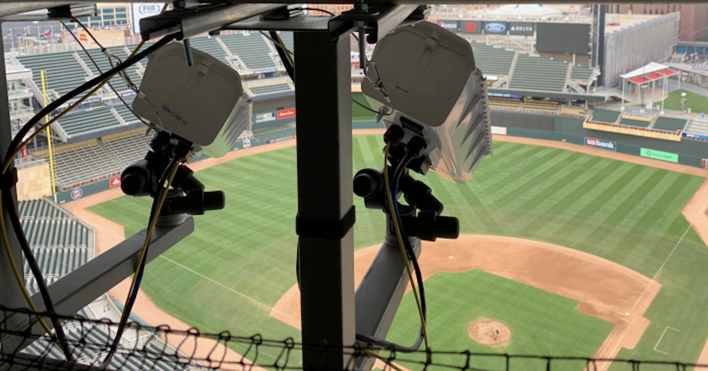
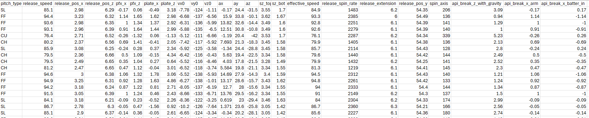
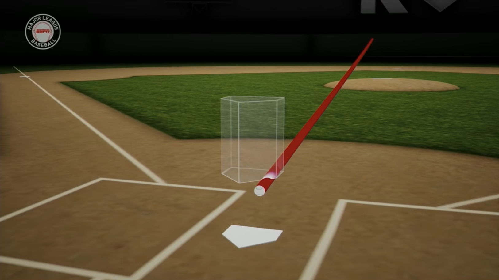
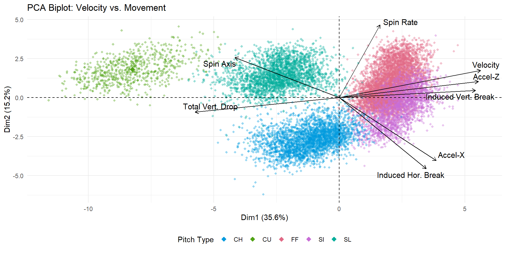
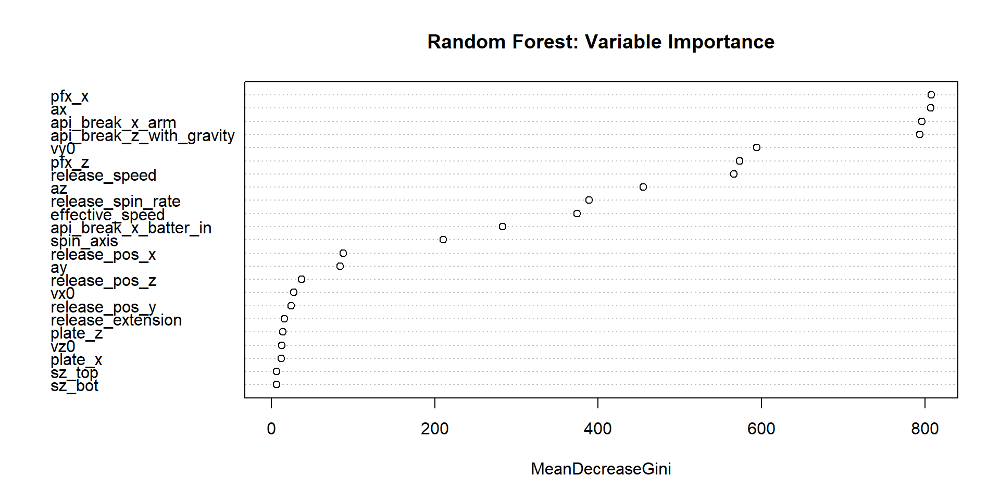
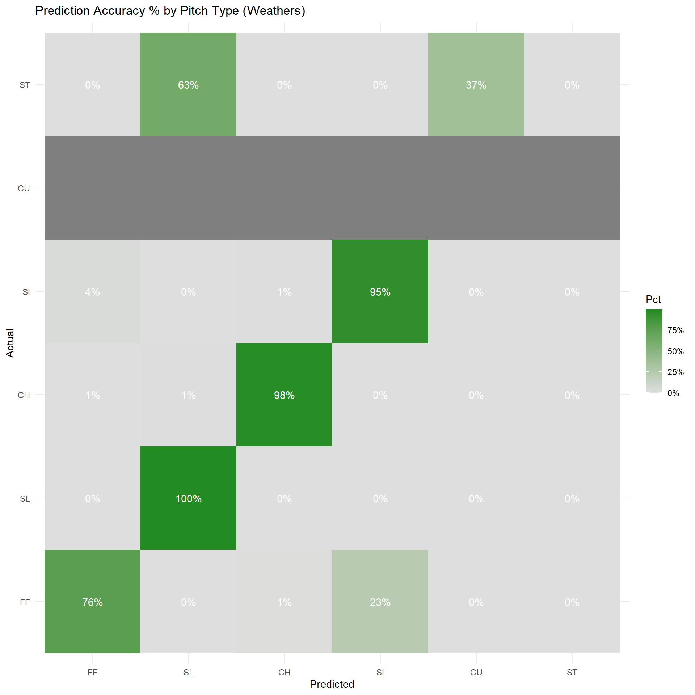
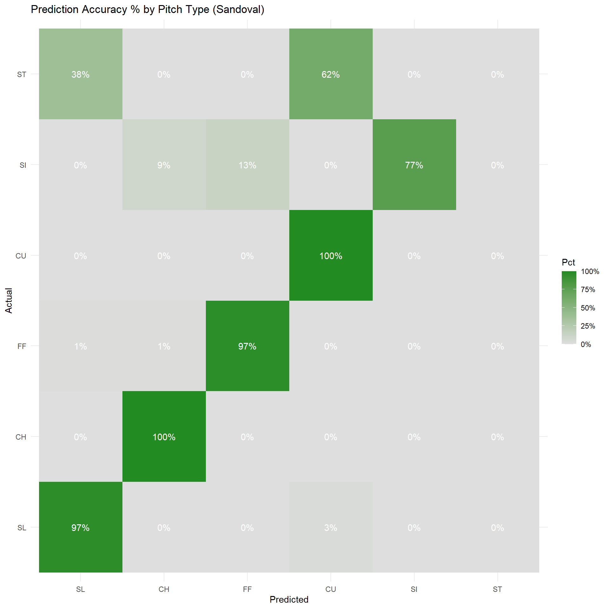
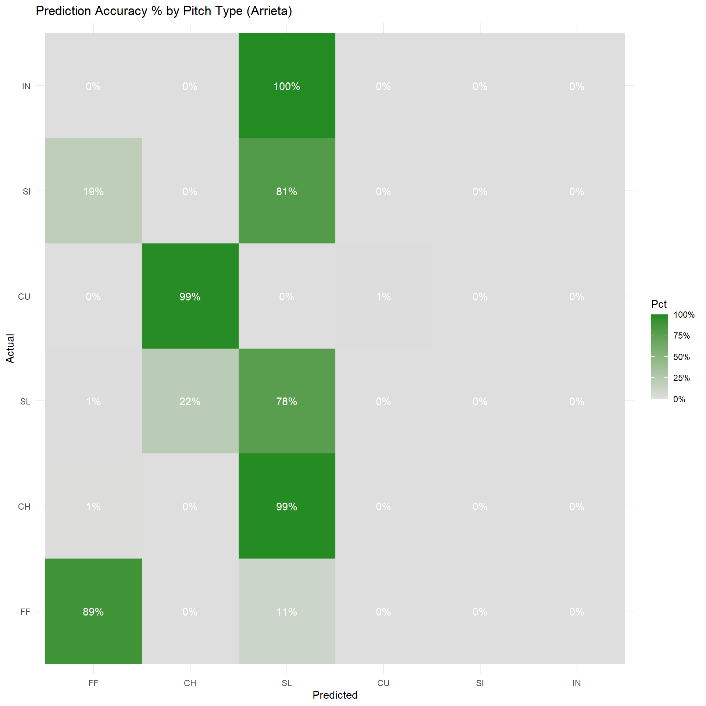
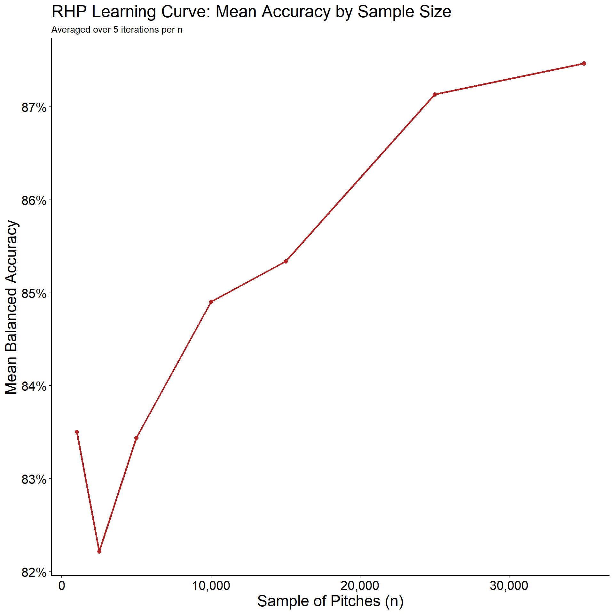
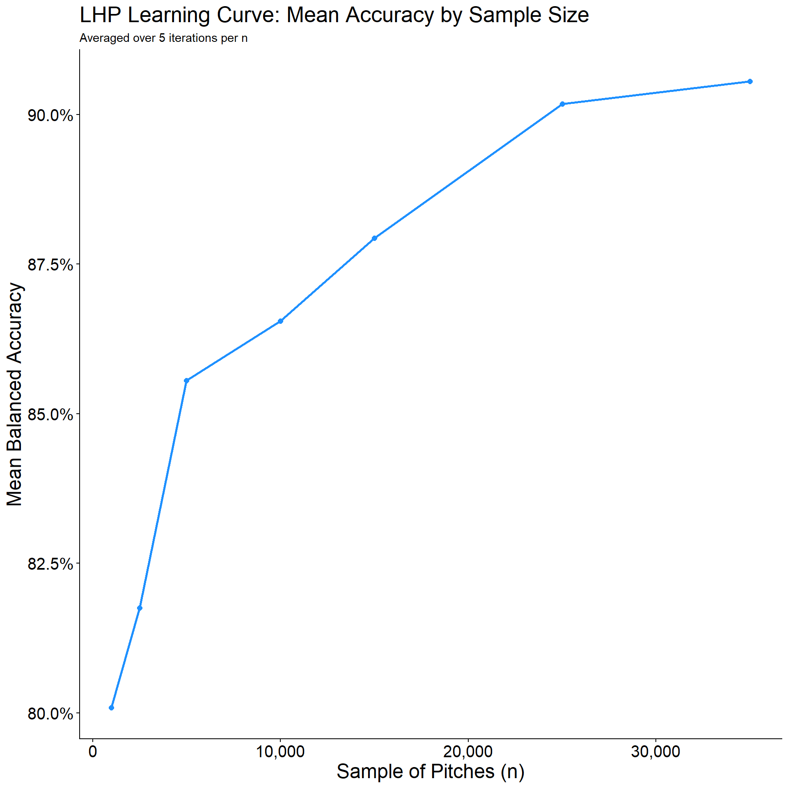

Pitch Prediction Analysis
Introduction: The Statcast Era
MLB Data Explosion: Detailed kinematic and location data is now available for nearly every MLB pitch.
Real-Time Classification: MLB stadiums instantly classify pitches using live data and machine learning.
Objective: Look under the hood of this process by building a predictive pitch classification model.

Motivation & Project Goals
Target Subject: Tarik Skubal (Detroit Tigers).
Techniques: Principal Component Analysis (PCA) and Clustering.
Core Research Questions:
- How accurately can pitch types be predicted using purely kinematic data?
- Which specific variables carry the most weight in predicting a pitch?
- Can this modeling framework be easily scaled to evaluate other pitchers?
Data & Tools
Data Source: baseballsavant.mlb.com
Collection Tool:
pybaseball(Open-source Python package by James LeDoux).Dataset Scope: 2020–2025 pitch-by-pitch data.
Pre-classified Targets: The dataset includes MLB’s official pitch classifications to evaluate model accuracy.
Filtered the Raw Dataset: Down to 23 numeric predictor variables, 1 binary classifier

Understanding the Predictor Variables (1)
x -> the horizontal direction, from the center of homeplate
y -> the baseball’s distance from home-plate
z-> vertical direction, from middle of strikezone
- Ex: (x, z) = (0,0) would be the exact middle of the strikezone
ax/y/z -> acceleration of the pitch in that respective direction

Understanding the Predictor Variables (2)
plate_x,z -> where the pitch crosses home-plate in the x, z coordinates
release_pos_x/z -> x, z coordinates of were the ball leaves the pitchers hand
release_pos_y -> how far away from the plate the pitcher relases the ball
api_break_x -> how far the pitch moves from x, z release point to x, z plate coords, after accounting for gravity
Understanding the Predictor Variables (3)
Binary Classifier: Right vs Left Handedness
Spin Axis vs Spin Rate(rpm)
Release Speed - Raw Velocity the moment it leaves pitchers hand
Effective Speed - basically the perceived speed to a batter; pitcher extension affects this.
PCA Analysis- delete

PCA - Biplot

Model Building
Model will be build using XGBoost
XGBoost: A collection of decision trees, similar to that of a CART or Random Forest
Training Set: 70%
Testing Set: 20%
Validation Set: 10%
CART
Random Forest- don’t need

XGBoost- focus of machine learning model
Confusion Matrix and Statistics
Reference
Prediction CH CU FF SI SL
CH 631 0 0 1 0
CU 0 144 0 0 1
FF 0 0 905 8 1
SI 1 0 3 467 0
SL 0 0 0 0 493
Overall Statistics
Accuracy : 0.9944
95% CI : (0.9907, 0.9968)
No Information Rate : 0.342
P-Value [Acc > NIR] : < 2.2e-16
Kappa : 0.9925
Mcnemar's Test P-Value : NA
Statistics by Class:
Class: CH Class: CU Class: FF Class: SI Class: SL
Sensitivity 0.9984 1.00000 0.9967 0.9811 0.9960
Specificity 0.9995 0.99960 0.9948 0.9982 1.0000
Pos Pred Value 0.9984 0.99310 0.9902 0.9915 1.0000
Neg Pred Value 0.9995 1.00000 0.9983 0.9959 0.9991
Prevalence 0.2380 0.05424 0.3420 0.1793 0.1864
Detection Rate 0.2377 0.05424 0.3409 0.1759 0.1857
Detection Prevalence 0.2380 0.05461 0.3443 0.1774 0.1857
Balanced Accuracy 0.9990 0.99980 0.9958 0.9896 0.9980Model Generalization
The model achieves 99% balanced accuracy on Skubal’s pitches.
How does it perform on other pitchers?
Ryan Weathers: LHP. Similar arsenal, but throws a sweeper instead of a traditional curveball.
Patrick Sandoval: LHP. Throws the exact same 5 pitches as Skubal, but with a less elite movement profile.
Jake Arrieta: RHP. Retired, but threw mostly the same pitch mix.
Generalization - Ryan Weathers

Balanced Accuracy =
Does a good job with Sliders, Changeups, and Sinkers.
Misclassified some fastballs as sinkers.
Weathers throws a Sweeper instead of a Curveball.
A sweeper is somewhere between a slider and curveball
Classifications mixed between slider and curveball
Generalization - Patrick Sandoval

Overall the model generalizes very well to Sandoval
Balanced Accuracy =
97%+ accuracy for slider, curveball, fastball, changeup.
Sinker did alright, misclassified often.
Sweeper again classified as curveball or slider.
Generalization - Jake Arrieta

Generalizing the model to a RHP didn’t do very well
Balanced Accuracy =
Makes logical sense, RHP and LHP throw from opposite sides
So when a RHP throws a slider it breaks left, while for a LHP it breaks right.
This would mean for a variable like api_break_x_arm we would get a positive value for a LHP, and a negative value for a RHP.
This will clearly cause classification issue when trying to split on x-axis based variables.
Scaling Up - Random Sample
Can a more general model be built off a random sample of ALL pitchers?
A sample size of n will be drawn from a data frame with 1.5 million pitches from 2023-2024.
Right and Left Handed Models built separately for each n.
Unbalanced Data; we will look at balanced accuracy.
At what n do we see a diminishing return for our model?
How Large of a Sample do I need?


RHP using Sample of 25,000
- Important Variables:
LHP using Sample of 25,000
- Important Variables:
Takeaways
Individualized models do the best job by far
Same Handed Pitchers generalize decently well when throwing the same pitches.
The larger the sample size of pitches in a generalized model, the better it will do.
Questions?
Sources
https://i.redd.it/68jn94t68zgb1.png
{kind=link}
notes : 1 to 1 aspect ratio for accuracy figures
Focus machine learning part.